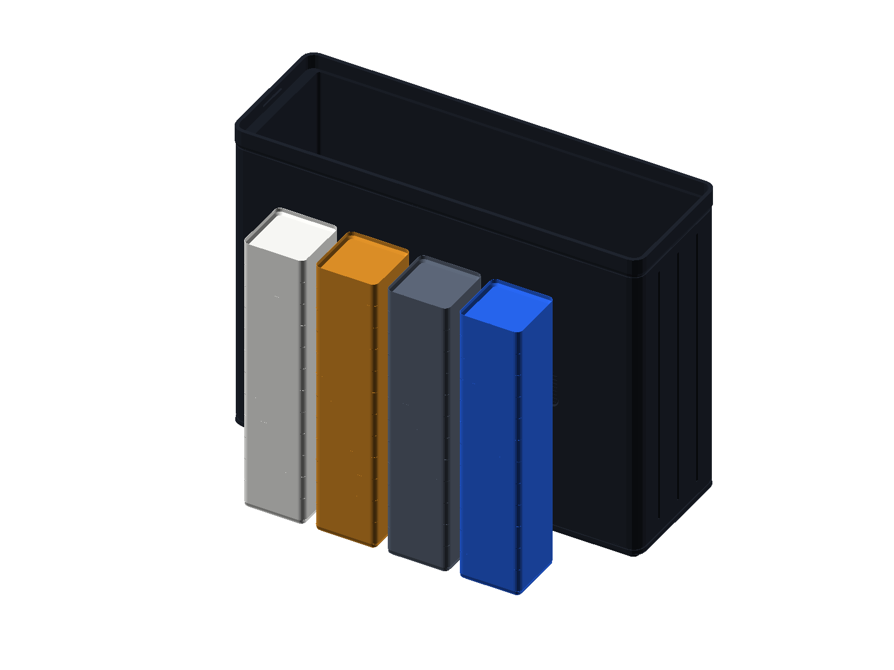
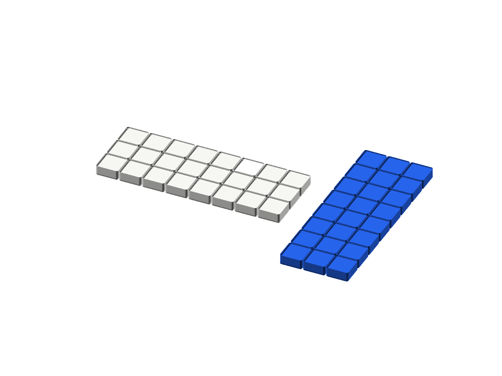
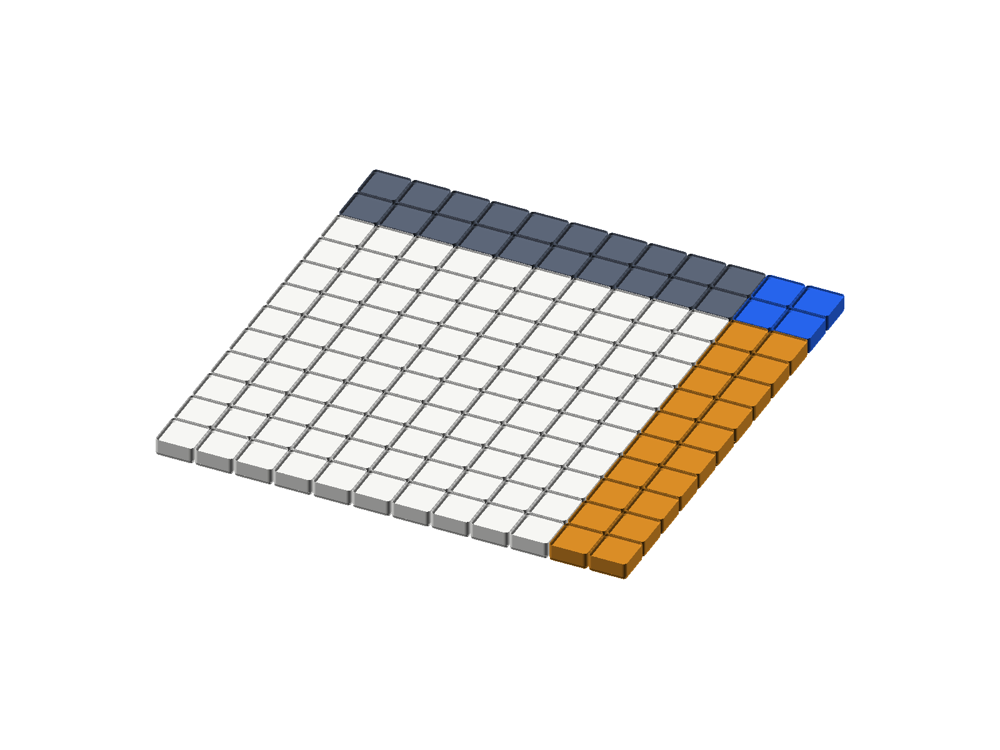
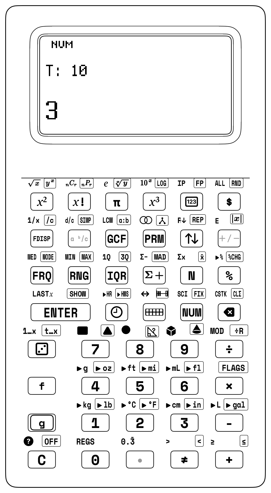

Chapter 4: Tile Arrays, Skip-Counting & Remainders
4.1 Young Gauss's 10-Second Shortcut & 2D Tile Grids
Break off a piece of a chocolate bar or pick up a LEGO baseplate and look at the bumps on top: 3 rows with 4 bumps in each row (\(3 \times 4 = 12\)). You don't have to guess what \(3 \times 4\) means or recite a chant in the dark—multiplication is literally a 2D tile grid you can see, touch, and rotate right on your desk! Whenever you arrange square tiles into equal rows and columns, the answer is simply the number of tiles filling that rectangle.
Back in 1786, in a noisy one-room schoolhouse in Germany, a grumpy teacher wanted an hour of peace and quiet (Sartorius von Waltershausen, 1856). So he walked to the blackboard and ordered the class to add up every single whole number from \(1\) to \(100\) on their chalk slates:
The teacher figured the kids would be hunched over their desks scribbling \(1 + 2 = 3\), \(3 + 3 = 6\), \(6 + 4 = 10\) for the rest of the afternoon.
Instead, a nine-year-old boy named Carl Friedrich Gauss (Gauss, 1809) stared at the numbers for a few seconds, wrote down one number on his slate, walked up to the teacher's desk, and smacked his slate down on the table:
For the next hour, while the other kids furiously added and erased mistakes, nine-year-old Carl sat with his arms folded. When the teacher finally flipped the slates over, almost every kid in the room had gotten tangled in carrying errors—except Carl, whose slate had just one number with zero scratch work: 5,050.
How did a nine-year-old beat the entire room in ten seconds?
Carl didn't add the numbers one by one. Instead, he pictured the number line in his head and folded it in half so the first number teamed up with the last number: $\(1 + 100 = 101, \quad 2 + 99 = 101, \quad 3 + 98 = 101, \quad \dots \quad 50 + 51 = 101\)$
Every single pair added up to \(101\), and folding \(100\) numbers in half made 50 pairs! Instead of doing 99 slow additions, Carl turned the problem into a 2D rectangle that was \(50\) rows tall by \(101\) units wide: $\(50 \times 101 = 5,050\)$
On the StackCalc SC-6, we use Carl's exact visual approach. With your 24-Tile Four-Color Array Studio (or sharing six desk kits to build a 144-tile classroom grid), you can snap rows and columns together on your desk to see how multiplication grids work. Then, on the calculator keypad, you will meet three special helper keys: [g] [REP] (Constant Repeat) for climbing skip-counting ladders in a single tap, [g] [÷R] (Quotient & Remainder) for seeing whole groups and leftovers at the same time, and [f] [LASTX] (Last Number) for checking your own answers in reverse.
4.1.1 Building 2D Tile Grids & Coloring Maps
Every multiplication problem you meet can be built out of equal groups, 2D rectangular tile grids, and color-coded maps right in your hands—feeling how rows and columns form a rectangle on your desk, seeing how wide grids split into four friendly color zones, and multiplying or chaining steps across the four shelves of your stack (Y [ENTER] X [×]).
Instead of a bag of loose cubes that roll onto the floor, your desk kit gives you the 24-Tile Four-Color Counting & Array Studio. Each kit holds 24 snap-together square stacking tiles in four bold, high-contrast colors—6 tiles each of Bright White (clean snow-white finish), Cobalt Blue (deep ocean blue), Radiant Gold (warm golden-yellow), and Slate Gray (cool storm-cloud gray). With \(4 \times 6 = 24\text{ tiles}\) in your personal desk kit (or 6 kits shared at a classroom table for a giant 144-tile \(12 \times 12\) grid), the smooth beveled edges let you slide tiles side by side into flat rectangles on your desk mat or snap them vertically into sturdy 3D block prisms without sticking.

4.1.2 Why 24 Is the Champion Packing Number
Why does your kit come with 24 tiles split into 4 colors instead of 20 or 25? Because 24 is a champion packing number! You can snap all 24 tiles into four different rectangles without a single leftover tile: \(1 \times 24\), \(2 \times 12\), \(3 \times 8\) (3 rows of 8 tiles: \(8 + 8 + 8 = 24\)), and \(4 \times 6\) (4 rows of 6 tiles: \(6 + 6 + 6 + 6 = 24\)). Inside that set of 24, each of the 4 colors has 6 tiles, which packs into its own \(2 \times 3\) six-pack rectangle or a 3-step staircase (\(1 + 2 + 3 = 6\)). Reshaping those 24 physical tiles between a wide \(3 \times 8\) grid and a compact \(4 \times 6\) grid with your hands makes it effortless to picture giant multi-digit arrays on your SC-6 stack:
| 24-Tile Rectangle | Turn-Around Twin (\(90^\circ\) Turn) | Equal-Row Addition | Stack Multiplication Check |
|---|---|---|---|
| 1 Row of 24 (\(1 \times 24\)) | 24 Rows of 1 (\(24 \times 1\)) | Single long train of \(24\) tiles | 1 [ENTER] 24 [×] \(\to \mathbf{24}\) |
| 2 Rows of 12 (\(2 \times 12\)) | 12 Rows of 2 (\(12 \times 2\)) | \(12 + 12 = 24\) (two dozen-rods) | 2 [ENTER] 12 [×] \(\to \mathbf{24}\) |
| 3 Rows of 8 (\(3 \times 8\)) | 8 Rows of 3 (\(8 \times 3\)) | \(8 + 8 + 8 = 24\) (three 8-bars) | 3 [ENTER] 8 [×] \(\to \mathbf{24}\) |
| 4 Rows of 6 (\(4 \times 6\)) | 6 Rows of 4 (\(6 \times 4\)) | \(6 + 6 + 6 + 6 = 24\) (four 6-color sets) | 4 [ENTER] 6 [×] \(\to \mathbf{24}\) |
4.1.3 Frame Borders & the Difference of Two Squares
In Chapter 3, you saw how wrapping odd-numbered L-borders (\(1 + 3 + 5 + 7 = 16\)) builds a square outward one layer at a time. Now flip that question around using your Counting & Array Studio and the \(90^\circ\) L-Frame Stage: what happens when you start with a \(5 \times 5 = 25\) square (all 24 tiles from your kit plus 1 unit miniblock in the corner) and lift a \(3 \times 3 = 9\) inner square right out of its bottom-left corner?
1. Lift Out the Inner Square (\(25 - 9 = 16\)): Removing the \(3 \times 3 = 9\) inner square from the \(5 \times 5 = 25\) square leaves a thick, L-shaped outer frame border made of \(16\) tiles (\(5^2 - 3^2 = 25 - 9 = 16\)).
2. Slide the Frame into a Rectangle (\((5 - 3) \times (5 + 3) = 2 \times 8 = 16\)): Look at the two arms of that remaining L-shaped frame: the top strip is \(2\) rows tall by \(5\) tiles wide (\(5 - 3 = 2\)), and the side strip is \(3\) tiles tall by \(2\) columns wide. Swing that \(3 \times 2\) side strip up and snap it onto the end of the \(2 \times 5\) top strip! Together they form a long, sleek \(2 \times 8 = 16\) rectangle whose height is the difference of the two squares' sides (\(5 - 3 = 2\)) and whose width is their sum (\(5 + 3 = 8\))!
3. Reshape into a \(4 \times 4\) Square (5 [x²] 3 [x²] [-] [f] [√x]): Cut that \(2 \times 8\) rectangle in half and stack the two \(2 \times 4\) halves on top of each other—it locks into a solid \(4 \times 4 = 16\) square! Test both discoveries on your SC-6 stack: first subtract the two squares by keying in 5 [x²] 3 [x²] [-] to see 16 on Shelf \(X\) (and tap [f] [√x] to confirm its 4-tile square side length), and then multiply the difference by the sum by keying in 5 [ENTER] 3 [-] 5 [ENTER] 3 [+] [×] to watch \((5 - 3) \times (5 + 3) = 2 \times 8 = \mathbf{16}\) come together right across your shelves!
4.1.4 Spinning a Tile Rectangle Quarter-Turn on Your Desk

Once you see that any multiplication problem is a physical rectangle of tiles, the three classical laws of multiplication—which math books call the Commutative, Associative, and Distributive laws—turn into hands-on movements you can test on your desk in seconds.
First, try spinning a rectangle a quarter-turn (\(\text{Rows} \times \text{Columns} = \text{Columns} \times \text{Rows}\)) right on your desk: snap together a solid rectangular mat of 3 rows of 8 tiles (\(3 \times 8 = 24\)), then physically pick up the mat and turn it \(90^\circ\) on the tabletop so you see 8 rows of 3 tiles (\(8 \times 3 = 24\)). Did the number of tiles change? Not a single tile was added or removed!
On the SC-6 stack, you can place both orientations side by side: first multiply 3 rows of 8 via 3 [ENTER] 8 [×] to put \(\mathbf{24}\) on Shelf \(X\), and then multiply 8 rows of 3 with 8 [ENTER] 3 [×] so the rotated \(\mathbf{24}\) lands on Shelf \(X\) while the original \(\mathbf{24}\) waits right next to it on Shelf \(Y\).
| Keystroke | Register T | Register Z | Register Y | Register X | What Happens on the Stack |
|---|---|---|---|---|---|
3 [ENTER] |
0 | 0 | 3 | 3 | Place 3 rows on Shelf \(X\) and lift a copy to Shelf \(Y\) |
8 [×] |
0 | 0 | 0 | 24 | Multiply by 8 columns per row (\(3 \times 8 = 24\) tiles on Shelf \(X\)) |
8 [ENTER] |
0 | 24 | 8 | 8 | First rectangle (24) rides up to Shelf \(Z\); lift 8 rows to Shelf \(Y\) |
3 [×] |
0 | 0 | 24 | 24 | Multiply rotated \(8 \times 3 = 24\) on Shelf \(X\); both 24s sit side by side! |
Look at Waiting Shelf \(Y\) and Ground Shelf \(X\) at the bottom of that table: both hold 24! You see with your own eyes and feel with your own hands that spinning a rectangle never changes its area.
4.1.5 Stacking Flat Rectangles into Three-Story Block Boxes
What happens when you stack flat rectangles on top of each other to build a 3D box? That shows why you can group three multiplied dimensions in any order: \((3 \times 4) \times 3 = 3 \times (4 \times 3)\). On your desk, start with two layers of \(3 \times 4\) tiles (\(12\) tiles per layer, \(24\) tiles total), and then scale up on your SC-6 to a three-layer block box (\(\text{Length} = 3,\; \text{Width} = 4,\; \text{Height} = 3 \implies 36\text{ blocks}\)):
Why do builders and engineers practice two different ways of slicing and multiplying the exact same 3D block prism? If you build the horizontal floor-layer first (\((3 \times 4) \times 3\)), you lay a flat \(3 \times 4\) floor mat on your desk (\(12\) tiles per horizontal layer) and stack \(3\) identical layers upward (\(12 \times 3 = 36\))—the exact layer-by-layer method architects use when multiplying one story's floor area by the number of stories ([3] [ENTER] [4] [×] [3] [×] multiplies the \(3 \times 4\) footprint into 12 and then scales by 3 stories to reach \(X = \mathbf{36}\)). If instead you build the vertical wall-slice first (\(3 \times (4 \times 3)\)), you stand up a vertical \(4 \times 3\) wall slice (\(12\) tiles per slice) and line up \(3\) identical wall slices side-by-side (\(12 \times 3 = 36\))—the method cargo spacecraft planners use when counting how many vertical supply bays fit down the length of a module (4 [ENTER] 3 [×] [f] [LASTX] [×] \(\longrightarrow X = \mathbf{36}\), where [f] [LASTX] pulls the second 3 right back onto Shelf \(X\)).
| Keystroke | Register T | Register Z | Register Y | Register X | What Happens on the Stack |
|---|---|---|---|---|---|
3 [ENTER] |
0 | 0 | 3 | 3 | Place length 3 on Shelf \(X\) and lift a copy to Shelf \(Y\) |
4 [×] |
0 | 0 | 0 | 12 | Multiply by width 4 to build one \(3 \times 4 = 12\)-tile layer on Shelf \(X\) |
3 [×] |
0 | 0 | 0 | 36 | Multiply by height 3 to stack three 12-tile layers into 36 blocks |
Whether you build horizontal floors first or vertical walls first, the box uses the exact same 36 blocks.
4.1.6 Slicing Wide Grids Along the Ten-Lines
What do you do when a multiplication grid is too wide to multiply in your head all at once—like \(12 \times 12\)? You slice the big rectangle along the 10-lines into smaller corner rectangles whose areas are super easy to multiply!
Start on your desk by arranging a \(4 \times 4 = 16\)-tile square using four \(2 \times 2\) color corners (4 white, 4 blue, 4 gold, and 4 gray tiles: \(4 + 4 + 4 + 4 = 16\)). Now imagine doing the exact same thing with a \(12 \times 12\) square by splitting each side of \(12\) into \(10 + 2\). Slicing between the \(10\) and the \(2\) divides the big \(12 \times 12\) square into four friendly color pieces: $\((10 + 2) \times (10 + 2) = (10 \times 10) + (10 \times 2) + (2 \times 10) + (2 \times 2) = 100 + 20 + 20 + 4 = 144\)$
| Grid Corner Piece | Dimensions | Area Value |
|---|---|---|
| Upper-Left (\(10 \times 10\)) | \(10\text{ rows} \times 10\text{ columns}\) | \(100\text{ square units}\) |
| Upper-Right (\(10 \times 2\)) | \(10\text{ rows} \times 2\text{ columns}\) | \(20\text{ square units}\) |
| Lower-Left (\(2 \times 10\)) | \(2\text{ rows} \times 10\text{ columns}\) | \(20\text{ square units}\) |
| Lower-Right (\(2 \times 2\)) | \(2\text{ rows} \times 2\text{ columns}\) | \(4\text{ square units}\) |
| Total Grid Area | \((10 + 2) \times (10 + 2) = 12 \times 12\) | \(144\text{ square units}\) |

On the SC-6, you can build both \((10 + 2)\) sides and multiply them directly across your shelves via [1][0] [ENTER] [2] [+] [1][0] [ENTER] [2] [+] [×], which forms 12 on Shelf \(Y\) and 12 on Shelf \(X\) before multiplying them into \(X = \mathbf{144}\).
| Keystroke | Register T | Register Z | Register Y | Register X | What Happens on the Stack |
|---|---|---|---|---|---|
10 [ENTER] |
0 | 0 | 10 | 10 | Place 10 on Shelf \(X\) and lift a copy to Shelf \(Y\) |
2 [+] |
0 | 0 | 0 | 12 | Add 2 to build the first side length (\(10 + 2 = 12\)) on Shelf \(X\) |
10 [ENTER] |
0 | 12 | 10 | 10 | First side 12 rides up to Shelf \(Z\); lift 10 onto Shelf \(Y\) |
2 [+] |
0 | 0 | 12 | 12 | Add 2 to build the second side 12 on Shelf \(X\); first 12 drops to Shelf \(Y\) |
[×] |
0 | 0 | 0 | 144 | Multiply the two 12-unit sides (\(12 \times 12 = 144\)) on Shelf \(X\) |
Those four color zones turn a big \(12 \times 12\) multiplication problem into four bite-sized pieces (\(100 + 20 + 20 + 4 = 144\)) you can add in your head! (And once you build the first 12 on Shelf \(X\), you can also duplicate and square it in two clicks: [ENTER] [×] \(\to\) 144.)
Once you see that you can slice any rectangle into two smaller rectangles, you unlock two everyday kitchen-table shortcuts for multiplying two-digit numbers and store prices in your head. In fact, around 1650 BC, an ancient Egyptian scribe named Ahmes wrote down this exact approach on a 17-foot scroll called the Rhind Mathematical Papyrus: the builders who raised the Great Pyramids of Egypt never needed giant wall-chart multiplication tables! Instead, they multiplied and divided huge numbers simply by doubling, halving, and breaking numbers into friendly chunks (\(10\text{s}\), \(5\text{s}\), and \(2\text{s}\))—the exact same method you use when you split a wide rectangle into two friendly pieces on Shelf \(Z\) and Shelf \(Y\) of your stack.
Say 8 buses each carry 53 campers (\(8 \times 53\)). Instead of reaching for a pencil, picture a rectangle 8 rows tall and 53 columns wide, and slice the width into \(50 + 3\) so you have an \(8 \times 50\) rectangle (\(400\)) right next to an \(8 \times 3\) rectangle (\(24\)):
$\(8 \times 53 = 8(50 + 3) = (8 \times 50) + (8 \times 3) = 400 + 24 = \mathbf{424}\)$
On your SC-6 stack, you compute both rectangles and fuse them across your shelves in one smooth run: 8 [ENTER] 50 [×] 8 [ENTER] 3 [×] [+] \(\longrightarrow\) 424. You can use that same rectangle-slicing trick in reverse to outsmart store price tags! Have you ever noticed how stores price items at \(\$9.90\) instead of \(\$10.00\) because .90 looks smaller—and looks annoying to multiply? To outsmart the price tag when buying 6 maker kits at \(\$9.90\) each (\(6 \times 9.90\)), pretend each kit costs a clean \(\$10.00\), and then subtract the \(\$0.10\) overcharge on each of the 6 kits:
$\(6 \times 9.90 = 6(10.00 - 0.10) = (6 \times 10.00) - (6 \times 0.10) = 60.00 - 0.60 = \mathbf{59.40}\)$
On your SC-6 stack, 6 [ENTER] 10 [×] 6 [ENTER] 0.10 [×] [-] lands right on 59.40—and now let's see how that same grid thinking powers real engineering projects!
4.1.7 Tile Grids on Spacecraft, Scoreboards & Bedroom Walls
Rectangular tile grids aren't just for math class—engineers, electricians, and homeowners use them every day to wire solar panels on spacecraft, count LEDs in a scoreboard, tally a jar of quarters, and figure out how much paint a bedroom wall needs. Look at a solar-panel wing on a Mars rover: it applies the exact quarter-turn rule we proved on your desk! Whether engineers mount the wing horizontally as 3 rows of 8 solar cells (3 [ENTER] 8 [×] \(\to\) 24) or rotate it \(90^\circ\) to fit inside a rocket fairing as 8 rows of 3 cells (8 [ENTER] 3 [×] \(\to\) 24), the panel packs the exact same \(X = 24\) solar cells.
Now glance up at the glowing numbers on a gym scoreboard or a crosswalk countdown sign, where each digit is built from a matrix of 9 rows with 7 LEDs per row. Place 3 rows of 7 counting tiles (\(21\) tiles) on your desk mat to see one-third of the grid, then scale up to all 9 rows on the stack: entering 9 [ENTER] 7 [×] lifts the 9 rows onto Shelf \(Y\) and multiplies by 7 LEDs per row, giving 63 LEDs (\(X = 63\), which you can immediately reverse-check with [f] [LASTX] [÷] \(\to 9\)). You can even use rectangular grouping at home when you dump out a coin jar, count 36 quarters, and want to multiply \(36 \times 25\text{ cents}\) in your head in two seconds! Picture stacking quarters in groups of four on a table: 4 quarters make 1 dollar (\(100\text{ cents}\)), which means \(25\) is simply \(100 \div 4\). Instead of multiplying \(36 \times 25\) the long way, divide \(36\) by \(4\) to find how many 4-quarter dollar stacks you have, and multiply by \(100\) via 36 [ENTER] 4 [÷] 100 [×]: 36 [ENTER] 4 [÷] groups 36 quarters into 9 whole dollars, and 100 [×] turns 9 dollars into 900 cents (\(X = 900\), or \(\$9.00\)).
What if your project combines two rectangular grids at once? Imagine painting a rectangular bedroom wall that measures \(15\text{ ft} \times 12\text{ ft}\), where a wide sliding closet doorway measuring \(18\text{ ft} \times 6\text{ ft}\) doesn't need paint. How do you find the painted wall area—written \((15 \times 12) - (18 \times 6)\)—right across your shelves?
Watch Shelf \(Z\) act as your automatic upper shelf, holding the \(180\text{ sq ft}\) wall area while you multiply the \(108\text{ sq ft}\) doorway area on the bottom shelf: running 15 [ENTER] 12 [×] 18 [ENTER] 6 [×] [-] subtracts the doorway from the wall to display 72 square feet.
| Keystroke | Register T | Register Z | Register Y | Register X | What Happens on the Stack |
|---|---|---|---|---|---|
15 [ENTER] 12 |
0 | 0 | 15 | 12 | Put wall width 15 onto Shelf \(Y\) and height 12 onto Shelf \(X\) |
[×] |
0 | 0 | 0 | 180 | Multiply wall size: \(15 \times 12 = 180\) on Shelf \(X\) |
18 [ENTER] 6 |
0 | 180 | 18 | 6 | Wall size 180 lifts to Shelf \(Z\); put 18 on Shelf \(Y\) and 6 on Shelf \(X\) |
[×] |
0 | 0 | 180 | 108 | Multiply doorway size: \(18 \times 6 = 108\); 180 drops to Shelf \(Y\) |
[-] |
0 | 0 | 0 | 72 | Subtract doorway from wall: \(180 - 108 = 72\) on Shelf \(X\) |
The final display reads \(X = \mathbf{72}\) square feet of wall to paint (and if you were laying flooring across a \(15\text{ ft} \times 12\text{ ft}\) bedroom plus an \(18\text{ ft} \times 6\text{ ft}\) hallway, tapping [+] at the end instead of [-] adds \(180 + 108 = 288\text{ sq ft}\) with the exact same shelf-to-shelf rhythm).
4.1.8 Francis Guthrie & the Four-Color Map Mystery
There is a second reason your Counting & Array Studio is molded in exactly four colors (White, Blue, Gold, and Slate Gray): it lets you play one of the greatest mathematical mysteries of all time right on your desk!
In 1852, a twenty-year-old London student named Francis Guthrie was coloring a map of the counties of England by hand. As he painted each county so that no two bordering counties shared the same color, he noticed something strange: no matter how twisting, crowded, or irregular the county borders were, he never needed a fifth crayon! Even if five or six regions swirled around a center point, four colors were always enough to keep every shared border distinct.
Francis showed the puzzle to his younger brother Frederick, who brought it to the famous mathematician Augustus De Morgan. At first, every professor who heard Guthrie's question assumed it would take an afternoon to prove. Instead, the Four-Color Map Theorem baffled the greatest mathematical minds on Earth for 124 years! Only in 1976 did mathematicians Kenneth Appel and Wolfgang Haken finally prove that four colors can color any flat map in the universe—using 1,200 hours on an electronic supercomputer to check \(1,936\) tricky map configurations!
You can test Francis Guthrie's discovery with a friend right now in a game of Four-Color Map Showdown. Deal your 24 four-color tiles between two players and take turns snapping a tile onto a growing map on your desk so that no two tiles of the same color ever share a flat side edge (touching at diagonal corners is fair game). Try to surround an empty gap with three different colors so your partner is forced to place the fourth color—and see for yourself why four colors can conquer any map you build!
4.1.9 Making Change & Hopping Across Decades
Notice how we just multiplied \(6 \times 9.90\) by jumping to a round landmark (\(6 \times 10.00 = 60.00\)) and adjusting by the tiny difference (\(\$0.60\)), and how we multiplied \(8 \times 53\) by splitting \(53\) into tens and ones (\(50 + 3\)). That exact same habit—jumping to friendly round tens and adjusting—turns tricky two-digit subtraction and addition into two-step mental hops!
When you subtract \(92 - 38\) on a paper worksheet by crossing out the 9, writing an 8, and penciling a tiny 1 next to the 2, it is easy to lose track of what is actually happening on your desk: you are unbundling one physical 10-rod into 10 unit cubes. Even better, just like our store price-tag shortcut for multiplication, you can solve \(92 - 38\) in your head by jumping to the nearest round decade!
First is Round-Landmark Compensation (\(92 - 38\)): imagine paying for a \(38\text{-cent}\) sticker when you have \(92\text{ cents}\) in your pocket. Instead of counting out 38 pennies one by one, you hand the cashier 4 dimes (\(40\text{ cents}\))—leaving \(92 - 40 = 52\text{ cents}\) in your pocket—and the cashier hands you \(2\text{ cents}\) change (\(52 + 2 = 54\))! Because \(38\) is just \(2\) steps shy of the round landmark \(40\), subtracting \(40\) and adding \(2\) back lands on the answer in two smooth hops:
$\(92 - 38 = (92 - 40) + 2 = 52 + 2 = 54\)$
Try that exact two-step rhythm on the SC-6 stack via 92 [ENTER] 40 [-] 2 [+], which subtracts 40 to reach 52 and adds the 2 cents of change to display \(X = \mathbf{54}\).
Second is Hop-by-Hop Decade Bridging (\(47 + 38\)): when adding \(47 + 38\) in your head, split \(38\) into three friendly hops (\(30 + 3 + 5\)). First add the 3 tens (\(47 + 30 = 77\)), next hop \(+3\) to lock into the round decade \(80\), and finally add the remaining \(5\):
$\(47 + 30 = 77 \quad \longrightarrow \quad 77 + 3 = 80 \quad \longrightarrow \quad 80 + 5 = 85\)$
Watch the stack trace your mental hops as you key in 47 [ENTER] 30 [+] 3 [+] 5 [+] to land on \(X = \mathbf{85}\).
4.2 Rhythmic Skip-Counting Ladders & Doubling Chains
How do you build rock-solid fluency with your times tables? Not by staring at a wall chart, but by climbing rhythmic skip-counting ladders (\(7, 14, 21, 28 \dots\)) while laying down rows of tiles on your desk!
On an ordinary keypad, trying to skip-count with + 7 = = = is fragile—if you bump any other key, the hidden constant vanishes. And on older scientific RPN calculators, locking a constant into the top register required pressing [ENTER] three times in a row (7 ENTER ENTER ENTER).
Your SC-6 makes skip-counting effortless with Constant Repeat ([g] [REP]) ([g] then [x⇄y]). When you type a step size like 7 and press [g] [REP], the calculator copies 7 onto all four shelves of the stack (\(T, Z, Y, X\)) at once!
Why does filling all four shelves turn [+] into an unstoppable skip-counting ladder? Remember how Top Shelf \(T\) works from Chapter 2: whenever an operation drops the stack, Top Shelf \(T\) leaves a copy of itself behind. So every single time you tap [+], a fresh 7 rides down from the top shelf to Shelf \(Y\), ready for your next tap!
4.2.1 How Constant Repeat Turns Addition into Multiplication
Let's start by climbing the Sevens Ladder—the same rhythm that counts the days in 1, 2, 3, or 10 weeks. First type 7 and press [g] [REP] ([g] then [x⇄y]) so every shelf (\(T, Z, Y, X\)) holds 7, and then tap [+] in a steady rhythm as you place 7-tile rows onto your desk:
| Keystroke | Register T | Register Z | Register Y | Register X | What Happens on the Stack |
|---|---|---|---|---|---|
7 |
0 | 0 | 0 | 7 | Type step size 7 (1 week = 7 days) onto Shelf \(X\) |
[g] [REP] |
7 | 7 | 7 | 7 | Copy step size 7 across all four shelves (\(T, Z, Y, X\)) |
[+] |
7 | 7 | 7 | 14 | 2 weeks = 14 days; Top Shelf \(T\) feeds a fresh 7 down |
[+] |
7 | 7 | 7 | 21 | 3 weeks = 21 days; another 7 drops into Shelf \(Y\) |
[+] |
7 | 7 | 7 | 28 | 4 weeks = 28 days (length of February in a common year) |
[+] |
7 | 7 | 7 | 35 | 5 weeks = 35 days on Shelf \(X\) |
[+] |
7 | 7 | 7 | 42 | 6 weeks = 42 days on Shelf \(X\) |
[+] |
7 | 7 | 7 | 49 | 7 weeks = 49 days (\(7 \times 7\) square!) |
[+] |
7 | 7 | 7 | 56 | 8 weeks = 56 days on Shelf \(X\) |
[+] |
7 | 7 | 7 | 63 | 9 weeks = 63 days on Shelf \(X\) |
[+] |
7 | 7 | 7 | 70 | 10 weeks = 70 days on Shelf \(X\) |
Look at Top Shelf \(T\) in the table above: 7 never leaves Top Shelf \(T\)! You can march through the entire 7s table (\(7, 14, 21, 28 \dots 70\)) with single taps of [+].
Once you have climbed the sevens, try the Twelves (Dozens) Ladder. The number 12 is everywhere in daily life—dozens of eggs, hours on a clock face, inches in a foot, and months in a year. Type 12, press [g] [REP], and tap [+] to climb the Dozens Ladder all the way to a gross (\(144\)):
$\(\mathbf{24, 36, 48, 60, 72, 84, 96, 108, 120, 132, 144}\)$
| Dozens (\(1\text{–}4\)) | Dozens (\(5\text{–}8\)) | Dozens (\(9\text{–}12\)) |
|---|---|---|
| \(1\text{ Dozen} = 12\text{ eggs}\) | \(5\text{ Dozen} = 60\text{ eggs}\) | \(9\text{ Dozen} = 108\text{ eggs}\) |
| \(2\text{ Dozen} = 24\text{ eggs}\) | \(6\text{ Dozen} = 72\text{ eggs}\) | \(10\text{ Dozen} = 120\text{ eggs}\) |
| \(3\text{ Dozen} = 36\text{ eggs}\) | \(7\text{ Dozen} = 84\text{ eggs}\) | \(11\text{ Dozen} = 132\text{ eggs}\) |
| \(4\text{ Dozen} = 48\text{ eggs}\) | \(8\text{ Dozen} = 96\text{ eggs}\) | \(12\text{ Dozen} = \mathbf{144}\text{ (1 Gross!)}\) |
4.2.2 Steady Steps vs. The Chessboard Doubling Explosion
What is the difference between adding the same step size over and over (+ 3) and doubling a number over and over (× 2)? Adding climbs like a steady staircase, while doubling starts tiny and then explodes.
First, let's climb a steady 3s addition ladder—like spacing fence posts or garden stepping stones 3 feet apart along a path. Instead of typing + 3 over and over, Constant Repeat ([g] [REP]) copies 3 into all four registers (\(T, Z, Y, X\)) so every tap of [+] adds another 3-foot step.
Snap together 3 rows of 3 counting tiles (\(9\) tiles) on your desk mat and count: 3, 6, 9 feet. Now climb all 9 steps on the stack by pressing 3 [g] [REP] [+] [+] [+] [+] [+] [+] [+] [+], which feeds a fresh 3 down from Top Shelf \(T\) on every tap to reach 27 feet.
| Keystroke | Register T | Register Z | Register Y | Register X | What Happens on the Stack |
|---|---|---|---|---|---|
3 [g] [REP] |
3 | 3 | 3 | 3 | First stepping stone at \(3\text{ ft}\) (copy step size 3 across all 4 shelves) |
[+] |
3 | 3 | 3 | 6 | 2nd stone at \(6\text{ ft}\); Top Shelf \(T\) keeps a fresh 3 ready |
[+] |
3 | 3 | 3 | 9 | 3rd stone at \(9\text{ ft}\); a fresh 3 drops down from Top Shelf \(T\) |
[+] |
3 | 3 | 3 | 12 | 4th stone at \(12\text{ ft}\) along the garden path |
[+] |
3 | 3 | 3 | 15 | 5th stone at \(15\text{ ft}\) (halfway down the garden path) |
[+] |
3 | 3 | 3 | 18 | 6th stone at \(18\text{ ft}\) along the path |
[+] |
3 | 3 | 3 | 21 | 7th stone at \(21\text{ ft}\) along the path |
[+] |
3 | 3 | 3 | 24 | 8th stone at \(24\text{ ft}\) along the path |
[+] |
3 | 3 | 3 | 27 | 9th stone at \(27\text{ ft}\) at the end of the path |
Look at the two-digit numbers in Shelf \(X\) and add their digits together (\(1+2=3\), \(1+5=6\), \(1+8=9\), \(2+1=3\), \(2+4=6\), \(2+7=9\)): the digit sums of every multiple of 3 always cycle through 3, 6, 9.
Now compare that calm, steady \(+3\) walk with one of the most famous legends in the history of mathematics: The Wheat and the Chessboard. Over a thousand years ago in ancient India, when the mathematician Sissa invented the game of chess (chaturanga) on an \(8 \times 8\) board of 64 squares, the king offered him any reward he wanted. Sissa asked for what sounded like a tiny bargain: put 1 grain of wheat on the first square of the chessboard, 2 grains on the second square, 4 grains on the third square, 8 grains on the fourth, doubling the wheat on each square (\(1 \to 2 \to 4 \to 8 \dots\)).
The king laughed and ordered his granary servants to fetch a small sack of wheat. Why was the king about to get a huge surprise? Place 1 counting tile on your desk, double it to 2, then 4, then 8, then 16 tiles to feel how fast doubling overtakes adding. On your SC-6, you can double any number either by locking 2 across all four shelves (2 [g] [REP] [×] [×]...) or by riding the two-key cloning rhythm ([ENTER] [+]). Keying in 1 [ENTER] [+] [ENTER] [+] [ENTER] [+] [ENTER] [+] [ENTER] [+] [ENTER] [+] duplicates and adds each square's count until Shelf \(X\) reaches 64 grains of wheat on the 7th square.
| Keystroke | Register T | Register Z | Register Y | Register X | What Happens on the Stack |
|---|---|---|---|---|---|
1 [ENTER] |
0 | 0 | 1 | 1 | Square 1: Place 1 grain of wheat on the corner square (duplicate into \(Y\)) |
[+] |
0 | 0 | 0 | 2 | Square 2: \(1 + 1 = 2\) grains of wheat |
[ENTER] [+] |
0 | 0 | 0 | 4 | Square 3: \(2 + 2 = 4\) grains of wheat |
[ENTER] [+] |
0 | 0 | 0 | 8 | Square 4: \(4 + 4 = 8\) grains of wheat |
[ENTER] [+] |
0 | 0 | 0 | 16 | Square 5: \(8 + 8 = 16\) grains of wheat |
[ENTER] [+] |
0 | 0 | 0 | 32 | Square 6: \(16 + 16 = 32\) grains of wheat |
[ENTER] [+] |
0 | 0 | 0 | 64 | Square 7: \(32 + 32 = 64\) grains of wheat |
After just 6 doublings, the pile on the 7th square is already at \(64\) grains (\(2^6 = 64\))—more than twice our 9-step addition ladder (\(27\)). At the end of the first row of 8 squares, it is still just a handful of wheat (\(128\) grains on the 8th square), so the king kept smiling. By the halfway mark of the chessboard (Square 32), however, the doubling reaches over \(2\text{ billion}\) grains—enough wheat to fill several freight train cars. And by the 64th square of the chessboard, the wheat pile explodes past \(18.4\text{ quintillion}\) grains (\(18,446,744,073,709,551,615\) grains in all)—enough wheat to bury the entire country of India more than a meter deep and exceed all the wheat harvested in human history!
4.3 Whole Groups & Remainders You Can Hold
In real life, sharing or packing items into equal groups doesn't always come out even—and when you are packing school buses, egg cartons, or 3D-printed parts, a leftover item is a physical object you can hold in your hand. Your SC-6 lets you see both the full groups and the leftovers at the exact same time across Shelves \(X\) and \(Y\).
4.3.1 Why Decimals Hide the Story in Whole-Number Division

Suppose 145 students are boarding 45-seat buses for a museum trip (like on the screen above), or 23 counting tiles are being dealt into stacks of 5. If you divide with standard decimal division ([÷]), a long decimal tail like 3.222222... hides how many whole buses are full and how many students still need a seat!
When you press Quotient & Remainder ([g] [÷R]) ([g] then [÷]), your stacked screen shows both whole-number answers at once (with Waiting Shelf \(Y\) right above Ground Shelf \(X\)):
- Shelf \(X\) shows Whole Groups (Quotient \(Q\))—how many complete groups you can build.
- Shelf \(Y\) holds Leftovers (Remainder \(R\))—how many loose items remain.
4.3.2 Dealing 23 Tiles into Groups of 5
Count out 23 Counting Tiles onto your desk and deal them into stacks of 5 tiles each. You can build 4 complete stacks of 5 (\(4 \times 5 = 20\) tiles), and you have 3 loose tiles left over in your hand:
1. Type 23 [ENTER] 5 [g] [÷R]. Shelf \(X\) displays 4 (4 full stacks), while Shelf \(Y\) holds 3 (3 loose tiles)!
2. Tap [x⇄y] to swap the 3 leftover tiles into \(X\) (and tap [x⇄y] again to put Quotient 4 back in \(X\) and Remainder 3 back in \(Y\)).
3. The 3-Key Remainder Proof: With Quotient 4 in \(X\) and Remainder 3 in \(Y\), tap [f] [LASTX] [×] [+]—recalling 5 from LASTX, multiplying \(4 \times 5 = 20\), and adding the 3 on Shelf \(Y\) to restore all 23 tiles!
| Keystroke | Register T | Register Z | Register Y | Register X | What Happens on the Stack |
|---|---|---|---|---|---|
23 [ENTER] |
0 | 0 | 23 | 23 | Place 23 counting tiles on Shelf \(X\) and lift a copy to Shelf \(Y\) |
5 |
0 | 0 | 23 | 5 | Type group size 5 onto Shelf \(X\) while 23 waits on Shelf \(Y\) |
[g] [÷R] |
0 | 0 | 3 | 4 | Divide into stacks of 5: Shelf \(X = 4\) full stacks, Shelf \(Y = 3\) left over |
[x⇄y] |
0 | 0 | 4 | 3 | Swap shelves to bring the 3 leftover tiles to Shelf \(X\) |
4.3.3 Packing Cartons, Rock Trays, and Book Crates Without Decimals
Whenever a farm, a science classroom, or a book warehouse packs items into fixed-size containers, [g] [÷R] separates full boxes (on Shelf \(X\)) from leftovers (on Shelf \(Y\)) in a single click.
Picture a family farm that collects 185 fresh chicken eggs in the morning to pack into standard 12-egg cartons. Entering 185 [ENTER] 12 [g] [÷R] places 15 full cartons on Shelf \(X\) with 5 leftover eggs on Shelf \(Y\), and then swaps 15 into the active display for breakfast:
| Keystroke | Register T | Register Z | Register Y | Register X | What Happens on the Stack |
|---|---|---|---|---|---|
185 [ENTER] |
0 | 0 | 185 | 185 | Put 185 total harvested eggs onto Shelf \(Y\) |
12 |
0 | 0 | 185 | 12 | Put carton size 12 onto Workbench Shelf \(X\) |
[g] [÷R] |
0 | 0 | 5 | 15 | Divide into whole cartons: Shelf \(X = 15\) full cartons, Shelf \(Y = 5\) leftover eggs |
[x⇄y] |
0 | 0 | 15 | 5 | Swap shelves to bring the 5 leftover eggs to Shelf \(X\) |
That same two-shelf split works for any packing size, from a classroom rock collection to a giant printing warehouse. In a geology lab sorting 140 polished rock and mineral samples into 6-slot display trays, dividing 140 by 6 and swapping shelves via 140 [ENTER] 6 [g] [÷R] puts 23 full trays in \(X\) and 2 extra rocks in \(Y\) before [x⇄y] brings 23 to the front (\(Q = 23\text{ trays}\), \(R = 2\text{ rocks}\)). And at a book warehouse packing 3,458 paperback books into 11-book shipping cartons, ordinary decimal division (\(3,458 \div 11 = 314.363636\dots\)) hides the leftover books inside a repeating decimal tail, whereas running 3458 [ENTER] 11 [g] [÷R] puts Quotient 314 (314 full cartons) on Shelf \(X\) and Remainder 4 on Shelf \(Y\) before swapping 314 onto Shelf \(X\)!
4.3.4 Rebuilding the Starting Pile & Interpreting Leftovers
Looking back to test your answer in reverse is the surest way to know you solved a problem accurately. Every whole-number division follows one unbreakable rule when you deal your Counting Tiles into equal rows on the tabletop:
$\(\text{Whole Groups} \times \text{Group Size} + \text{Leftovers} = \text{Starting Total}\)$
Right after any [g] [÷R] division on your SC-6, your Whole Groups (\(Q\)) sit on Shelf \(X\), your Leftovers (\(R\)) wait on Shelf \(Y\), and the Group Size is tucked inside LASTX—so tapping [f] [LASTX] [×] [+] rebuilds your starting pile in 3 clicks!
Even more important in real life is deciding what to do with the leftovers sitting on Shelf \(Y\). Sometimes a remainder forces you to round the quotient up by 1 (\(Q + 1\)) so nothing gets left behind. Say 135 robotics students are riding to a tournament in 8-seat vans: tapping 135 [ENTER] 8 [g] [÷R] shows Quotient 16 full vans in \(X\) and Remainder 7 students in \(Y\) (check: [f] [LASTX] [×] [+] \(\to 135\)). Can you leave 7 teammates standing in the parking lot? Never! You must round up to \(16 + 1 = \mathbf{17\text{ vans}}\). The same thing happens when you slide 165 baseball or Pokémon trading cards into clear plastic binder pages that hold 9 cards per page (165 [ENTER] 9 [g] [÷R] \(\longrightarrow\) Quotient 18 full pages in \(X\), Remainder 3 cards in \(Y\)): to protect every card without leaving 3 cards loose in a drawer, you need 18 complete 9-pocket pages plus 1 extra page for the last 3 cards—19 album pages in all.
Other times, only full groups count (\(Q\)) because a leftover piece is too small to build another whole item. Suppose a maker-lab spool holds \(450\text{ meters}\) of PLA filament, and each 3D-printed chess knight requires \(16\text{ meters}\) (450 [ENTER] 16 [g] [÷R] \(\longrightarrow\) Quotient 28 in \(X\), Remainder 2 meters in \(Y\)). Because \(2\text{ m}\) of leftover filament cannot print a 29th knight, you can print 28 complete chess knights with \(2\text{ m}\) of PLA left over. (See Chapter 7 for how [g] [÷R] also powers Euclid's GCF algorithm.)
4.4 Proving Your Work in Reverse & NASA's Human Computers
Every arithmetic operation has an opposite partner that undoes its work: subtraction undoes addition, addition undoes subtraction, division undoes multiplication, and multiplication undoes division.
Because Last Number Recall ([f] [LASTX]) ([f] then [ENTER]) always holds a backup copy of the number that was sitting on Shelf \(X\) right before your last operation, you can pair [f] [LASTX] with all four opposite operations to check your work in two clicks, undo an accidental button press ([f] [LASTX] [-] after an unintended [+]), or reuse a repeated factor without typing it twice.
4.4.1 Four Opposite-Operation Pairs & the Two-Click Speed Sprint
Because [f] [LASTX] keeps your last input ready, every operation has a two-click reverse check ([+] \(\leftrightarrow\) [f] [LASTX] [-] and [×] \(\leftrightarrow\) [f] [LASTX] [÷]). Test all four directions right on your keypad: for Addition \(\leftrightarrow\) Subtraction, key 47 [ENTER] 36 [+] (\(47 + 36 = \mathbf{83}\)) and tap [f] [LASTX] [-] to return to \(\mathbf{47}\), or subtract first via 95 [ENTER] 38 [-] (\(95 - 38 = \mathbf{57}\)) and tap [f] [LASTX] [+] to restore \(\mathbf{95}\). In the exact same way, for Multiplication \(\leftrightarrow\) Division, multiply 15 [ENTER] 8 [×] (\(15 \times 8 = \mathbf{120}\)) and tap [f] [LASTX] [÷] to return to \(\mathbf{15}\), or divide first via 84 [ENTER] 7 [÷] (\(84 \div 7 = \mathbf{12}\)) and tap [f] [LASTX] [×] to restore \(\mathbf{84}\).
Watch the stack trace a complete two-click check when you combine 68 quarters and 27 dimes (68 [ENTER] 27 [+] [f] [LASTX] [-] \(\to 95\) coins, then [f] [LASTX] [-] \(\to\) 68 quarters):
| Keystroke | Register T | Register Z | Register Y | Register X | What Happens on the Stack |
|---|---|---|---|---|---|
68 [ENTER] |
0 | 0 | 68 | 68 | Put 68 quarters onto Shelf \(X\) and lift a copy to Shelf \(Y\) |
27 [+] |
0 | 0 | 0 | 95 | Type 27 dimes on Shelf \(X\) and add to make 95 coins |
[f] [LASTX] |
0 | 0 | 95 | 27 | Bring back 27 dimes onto Shelf \(X\); sum 95 lifts to Shelf \(Y\) |
[-] |
0 | 0 | 0 | 68 | Subtract to check our work: \(95 - 27 = 68\) quarters restored |
Now try a Two-Click Speed Sprint across seven quick workshop and hobby counts, solving each calculation forward and immediately snapping it back to its starting number with [f] [LASTX]. Start by multiplying 18 packs of 6 model-rocket motors and reverse-checking (18 [ENTER] 6 [×] [f] [LASTX] [÷] \(\to\) 18 packs), then divide 156 trail-mix pouches into bags of 12 and reverse-check (156 [ENTER] 12 [÷] [f] [LASTX] [×] \(\to\) 156 pouches). Next, move 35 fossil shark teeth out of a 92-tooth display box and add them back (92 [ENTER] 35 [-] [f] [LASTX] [+] \(\to\) 92 teeth), or combine 348 baseball cards with 185 football cards and subtract the second pile back out (348 [ENTER] 185 [+] [f] [LASTX] [-] \(\to\) 348 baseball cards). Finish the sprint by checking 24 rows of 16 auditorium seats (24 [ENTER] 16 [×] [f] [LASTX] [÷] \(\to\) 24 rows), draining and refilling 187 liters on a 500-liter reef aquarium (500 [ENTER] 187 [-] [f] [LASTX] [+] \(\to\) 500 liters), and sorting 225 skateboard wheels into trays of 15 (225 [ENTER] 15 [÷] [f] [LASTX] [×] \(\to\) 225 wheels).
4.4.2 Folding Paper to the Sky & Your Age in Seconds
Think multiplication is only for small one-digit grids? A sheet of notebook paper is only \(1\text{ layer}\) thick, and every time you fold it in half, the number of layers doubles (\(\times 2\)). Can you fold a piece of paper 10 times with your bare hands? Almost nobody can—and Constant Repeat ([g] [REP]) shows why! When you seed the stack with 2 and tap [×] nine times in a row—running 2 [g] [REP] [×] [×] [×] [×] [×] [×] [×] [×] [×]—you watch a 10-step Doubling Chain (\(2 \times 2 \times 2\dots\)) climb to 1024 layers (thicker than a 1,000-page dictionary).
Watch how fast that single sheet of paper grows as you tap [×]. First tap 2 [g] [REP] to lock 2 into all four shelves (\(T = Z = Y = X = 2\)), then press [×] three times for Folds 1 to 4 to double the paper to 4, 8 (thicker than cardstock), and 16 layers—where it already fights back against your thumb! Three more taps for Folds 5 to 7 reach 32 layers (like a deck of index cards), 64 layers (stiff like a wooden ruler), and 128 layers, where it becomes impossible to fold further with bare hands. The final three taps for Folds 8 to 10 hit 256 layers (a hardcover book), 512 layers (a whole 500-sheet pack of printer paper), and 1,024 layers—and if you tapped [×] 10 more times (\(20\text{ folds} = 1,048,576\text{ layers}\)), that single sheet of paper would stand taller than the Empire State Building!
Now test a second big-number challenge: if you are 11 years old, have you lived for a million seconds yet—or even a billion seconds? Chain the multiplication right on the stack (\(11\text{ years} \times 365\text{ days} \times 24\text{ hours} \times 60\text{ minutes} \times 60\text{ seconds}\)) via 11 [ENTER] 365 [×] 24 [×] 60 [×] 60 [×] to reveal 346,896,000 seconds on Shelf \(X\). Start by tapping 11 [ENTER] 365 [×] to see 4,015 days of sunrises and sunsets, then tap 24 [×] to turn those days into 96,360 hours. Next, tap 60 [×] to reach 5,781,600 minutes, and tap 60 [×] (or [f] [LASTX] [×]!) to reach 346,896,000 seconds—proving that you actually passed \(1,000,000\text{ seconds}\) when you were only \(11\text{ and a half days}\) old, and that at age 11 you are already more than one-third of the way to 1 Billion seconds!
4.4.3 Exponents and Multi-Step Builds in the Workshop
Instead of tapping [×] ten times in a row when you multiply the same number by itself, your keypad gives you two dedicated power keys: the Square key [x²] and the Exponent key [g] [yˣ]. Before pressing an exponent key, build a \(4 \times 4\) square on your desk with 16 Counting Tiles to see the #1 exponent rule with your own eyes: \(4^2\) means 4 multiplied by itself (\(4 \times 4 = \mathbf{16}\) tiles in a square), never \(4 \times 2 = 8\)! On your SC-6, tapping 4 [x²] immediately turns 4 into 16.
What happens when you multiply a number by itself four or five times using [g] [yˣ]? Suppose you want to hoist a heavy \(96\text{-pound}\) tool crate up into a backyard treehouse using only \(3\text{ pounds}\) of pulling force. By rigging a compound block-and-tackle pulley hoist where each movable pulley loop shares the load between two ropes, you double your lifting power (\(\times 2\)) with every stage. With 5 movable pulleys, your pulling force doubles 5 times (\(2 \times 2 \times 2 \times 2 \times 2 = 2^5 = 32\)):
$\(\text{Total Lifting Force} = 3\text{ pounds} \times (2 \times 2 \times 2 \times 2 \times 2) = 3 \times 32 = \mathbf{96\text{ pounds}}\)$
Verify that on your SC-6 stack: 2 [ENTER] 5 [g] [yˣ] 3 [×] \(\longrightarrow\) 96 pounds. Biologists see an even faster power chain in nature when European starlings wheel across the sunset sky in a swirling murmuration: if 1 startled scout bird signals 5 nearest neighbors, who each signal 5 more (\(5 \times 5 = 25\)), across just 4 signaling waves (\(5 \times 5 \times 5 \times 5 = 5^4\)), tapping 5 [ENTER] 4 [g] [yˣ] shows 625 starlings turning together in a fraction of a second!
Now bring rectangular arrays, Shelf \(Z\), and [g] [÷R] together at a maker workbench where you are wiring a solar rover and assembling wheel bearings for three soapbox go-karts.
Say your rover chassis needs 3 corner light pods with 4 LEDs in each pod (\(3 \times 4 = 12\) LEDs) AND 2 headlight bars with 5 LEDs in each bar (\(2 \times 5 = 10\) LEDs)—Notice that those are the exact same \(3 \times 4\) and \(2 \times 5\) numbers as our Chapter 2 snack-bar order (\(3\) pretzels at \(\$4\) + \(2\) smoothies at \(\$5\)), now arranged as physical tile grids! Lay out 3 rows of 4 blue counting tiles (\(12\)) and 2 rows of 5 gold counting tiles (\(10\)) on your desk. When you chain both arrays on the stack via 3 [ENTER] 4 [×] 2 [ENTER] 5 [×] [+], the first array (12) automatically rides up to Shelf \(Z\) while you multiply the second array (10), then drops back to combine into 22 LEDs in all:
| Keystroke | Register T | Register Z | Register Y | Register X | What Happens on the Stack |
|---|---|---|---|---|---|
3 [ENTER] 4 |
0 | 0 | 3 | 4 | Place 3 corner pods on Shelf \(Y\) and 4 LEDs per pod on Shelf \(X\) |
[×] |
0 | 0 | 0 | 12 | Multiply for the corner-pod array (\(3 \times 4 = 12\) LEDs) |
2 [ENTER] 5 |
0 | 12 | 2 | 5 | Lift 12 LEDs to Shelf \(Z\) and 2 bars to Shelf \(Y\); type 5 LEDs per bar |
[×] |
0 | 0 | 12 | 10 | Multiply for the headlight-bar array (\(10\) LEDs) while 12 waits on Shelf \(Y\) |
[+] |
0 | 0 | 0 | 22 | Combine \(12 + 10 = 22\) total rover LEDs on Shelf \(X\) |
With Shelf \(X\) reading \(22\), you know the rover wiring harness powers \(\mathbf{22}\) LEDs in total.
Next, picture building 3 rolling soapbox carts in the driveway with your friends. Each cart rolls on 12 roller-blade wheels, and every wheel housing holds 3 steel ball bearings (\(3 \times 12 \times 3\) bearings in all). If skateboard bearings are sold in plastic tubes of 8 bearings each, how many full tubes are used up, and how many extra bearings are needed from one more tube?
Chain the three multiplications right into 8 [g] [÷R] and swap registers with 3 [ENTER] 12 [×] 3 [×] 8 [g] [÷R]: multiplying \(3 \times 12 \times 3\) gives 108 bearings in all, 8 [g] [÷R] splits 108 into 13 full tubes (\(X = 13\)) with 4 extra bearings needed (\(Y = 4\)), and [x⇄y] brings 13 to the front—meaning you need to buy 14 tubes in total so every wheel can spin.
4.4.4 Katherine Johnson & NASA's Human Computers
Long before astronauts trusted their lives to electronic flight computers, spaceflight depended on the sharp eyes and self-checking habits of mathematicians known as Human Computers—and none was more legendary than Katherine Johnson.
Growing up in White Sulphur Springs, West Virginia in the 1920s, young Katherine loved patterns and numbers so much that she counted everything she passed: the steps up the road to school and church, the forks and plates she dried after dinner, and the bright stars appearing in the evening sky. Because she saw how numbers grouped into rows, columns, and skip-counting steps—just like your Counting Tiles and the [g] [REP] key ([g] then [x⇄y])—she skipped three grades in elementary school, entered high school at age ten, and graduated from college with highest honors in mathematics at age eighteen!
In 1953, Katherine Johnson joined the Flight Research Division at Langley Research Center in Hampton, Virginia (which soon became part of NASA). When America prepared to launch its first astronauts into space in 1961 and 1962, a single rounding error or stray digit in a trajectory equation could mean an astronaut's capsule splashed down hundreds of miles away from the recovery ship in the Atlantic Ocean.
In February 1962, as astronaut John Glenn prepared to become the first American to orbit the Earth aboard Friendship 7, NASA installed massive room-sized IBM electronic computers to calculate his orbital path. Yet before John Glenn would climb into the nose cone of the Atlas rocket, he gave the flight engineers a famous four-word order:
"Get the girl to check the numbers."
Glenn declared that if Katherine Johnson checked the trajectory equations by hand on her desktop mechanical calculator and said the numbers were good, then he was ready to fly. Over a day and a half of intense focus, Katherine worked through every multi-step orbital equation—and how did she and her fellow Langley mathematicians make sure not a single step had slipped?
They ran every calculation in reverse using the opposite operation—the exact two-tap habit built into your [f] [LASTX] key! Whenever Katherine Johnson and her fellow Langley mathematicians added two velocity vectors (\(A + B = S\)), they immediately subtracted the second vector (\(S - B = A\)) to prove the starting value reappeared without a single altered digit; whenever they subtracted a fuel burn (\(A - B = D\)), they added \(B\) right back (\(D + B = A\)).
In the same way, whenever they multiplied an engine burn time by an acceleration rate (\(A \times B = P\)), they immediately divided the product by \(B\) to verify that it returned to the exact starting value—and whenever an orbital period left a whole number of revolutions plus a remainder, they multiplied the whole orbits by the period and added the remainder back ([f] [LASTX] [×] [+]) to prove the total flight time matched down to the tenth of a second.
From calculating the suborbital arc of Alan Shepard's Freedom 7 in 1961 and verifying John Glenn's Friendship 7 orbital trajectory in 1962 to computing the lunar-orbit rendezvous window that connected the Apollo 11 Lunar Module Eagle with the Command Module Columbia above the Moon in 1969, Katherine Johnson's pencil-and-calculator proofs never missed a mark. Every time you tap [f] [LASTX] on your SC-6 followed by the opposite operation key—or look at a remainder on Shelf \(Y\) and decide whether a real-world bus trip needs one extra vehicle so nobody is left behind—you are practicing the exact verification discipline that brought America's astronauts safely home to Earth!
4.4.5 John Napier's 1617 Diagonal Multiplication Strips
Three hundred years before Katherine Johnson checked NASA rocket trajectories on her desktop calculator, a Scottish inventor named John Napier (1550–1617) asked himself why multiplying big numbers on paper felt so slow and tiring. He noticed that almost every mistake happened when people tried to multiply two digits and carry a tens digit in their head at the exact same time.
In 1617, Napier published a tiny book in Edinburgh called Rabdologiae (Calculation with Rods) that unveiled one of the cleverest pocket inventions in history: Napier's Bones! Instead of forcing you to memorize giant multi-digit products, Napier carved the single-digit times tables (0 through 9) onto vertical strips of wood or bone, and drew a diagonal slash across every box from the bottom-left corner to the top-right corner. That diagonal line split every two-digit answer into two separate triangles: the tens digit sat in the upper-left triangle, and the ones digit sat in the lower-right triangle!
Why did that simple diagonal line make big multiplications effortless? Because when you place two or three of Napier's strips side by side—say, the 3 strip, the 6 strip, and the 8 strip to form the number 368—the lower-right ones triangle of each column lines up along the exact same diagonal alley as the upper-left tens triangle of the column to its right!
Let's see how a 17th-century astronomer used Napier's strips to multiply \(368 \times 7\) in five seconds flat, and then watch how the exact same place-value pieces combine on your SC-6 stack:
- Read Row
7Across the3,6, and8Strips: On the3strip, Row 7 reads2 / 1(\(3 \times 7 = 21\), or \(21\text{ hundreds} = 2,100\)). On the6strip, Row 7 reads4 / 2(\(6 \times 7 = 42\), or \(42\text{ tens} = 420\)). On the8strip, Row 7 reads5 / 6(\(8 \times 7 = 56\), or \(56\text{ ones}\)): $\(\text{Row } 7 \text{ on the } 3\text{-}6\text{-}8 \text{ Strips: } \quad \mathbf{2}\ /\ \mathbf{1} \quad \big| \quad \mathbf{4}\ /\ \mathbf{2} \quad \big| \quad \mathbf{5}\ /\ \mathbf{6}\)$ - Slide Down the Diagonal Alleys: Starting at the far right, the ones triangle holds
6. In the next diagonal alley to the left, the2tens from4 / 2and the5tens from5 / 6sit together (\(2 + 5 = \mathbf{7}\) tens). In the next diagonal alley left, the1hundred from2 / 1and the4hundreds from4 / 2sit together (\(1 + 4 = \mathbf{5}\) hundreds). And at the far left sits2thousands—spelling out2,576right before your eyes! - Verify the Three Place-Value Strips on Your Stack: Key the three strips into your SC-6 one column at a time:
- First multiply the
300strip:300 [ENTER] 7 [×]puts2,100on Shelf \(X\). - Next multiply the
60strip and add it in:60 [ENTER] 7 [×] [+]adds \(420\) to reach2,520. - Finally multiply the
8strip and add it in:8 [ENTER] 7 [×] [+]adds \(56\) to land on2,576—matching368 [ENTER] 7 [×]\(\to \mathbf{2,576}\) to the exact digit!
You can make your own pocket set of Napier's strips at home using ten ruled index cards and a ruler: draw 9 boxes down each card, slice each box diagonally from bottom-left to top-right, and write the multiples of that card's top number (1 through 9) inside the triangles. Whenever you lay two cards side by side and compare their diagonal alleys against your Four-Color Array Studio and your SC-6 stack, you can see four hundred years of hands-on math history working together on your desk.
4.5 Array & Remainder Challenges & Looking Ahead
With 2D tile grids, skip-counting chains, whole-number remainders, and two-click reverse checks in your toolkit, try these three challenges with your family before we slice leftover remainders into exact fractions in Chapter 5.
4.5.1 Three Array, Doubling & Remainder Challenges
Bring a penny, your Four-Color Array tiles, and your SC-6 to the table and put these three puzzles to the test:
- The 20-Day Doubling Penny vs. \(\$1,000\) Cash Bet (
2 [g] [REP] [×]): Ask a family member at dinner whether they would rather take \(\$1,000\) cash right now or start with \(1\text{ penny}\) and double it every day for 20 doublings (\(2\text{ pennies}\) after 1 doubling, \(4\text{ pennies}\) after 2 doublings, \(8\text{ pennies}\) after 3 doublings, and so on). - Almost everyone picks the \(\$1,000\) cash! Now hand them your SC-6, lock
2into all four shelves with2 [g] [REP], and let them tap[×]nineteen times in a row to watch the pennies double across the screen: after 10 doublings they have1,024pennies (\(\$10.24\)), and after 20 doublings (\(2^{20}\))—which you can also reach in a single click from Day 10's1,024by tapping the Square key[x²]!—the stack lands on1,048,576pennies, or \(\$10,485.76\)! - Roller-Coaster Cars vs. Terrarium Moss Jars (
[g] [÷R]Detective): Compare two division stories where the remainder changes your decision: - Story A (Roller-Coaster Cars): 115 theme-park riders are waiting in line to board 8-seat roller-coaster cars. Run
115 [ENTER] 8 [g] [÷R]to find how many full cars (14on Shelf \(X\)) and how many extra riders (3on Shelf \(Y\)) you have—and decide whether the operator must dispatch14or15cars so everyone gets a ride! - Story B (Terrarium Moss Jars): A botany club has 190 polished river pebbles, and each glass terrarium jar requires 12 pebbles for its drainage layer (
190 [ENTER] 12 [g] [÷R]). How many complete terrarium jars can they build (15on Shelf \(X\)), how many pebbles are left in the bowl (10on Shelf \(Y\)), and what happens when you tap[f] [LASTX] [×] [+]? - The 120-Block Prism Slicer & Four-Color Map Duel: Calculate the volume of a 3D storage crate measuring \(4\text{ units wide} \times 6\text{ units deep} \times 5\text{ units tall}\) in three different grouping orders:
- Floor Layer First:
4 [ENTER] 6 [×] 5 [×](\(\to \mathbf{120}\)) - Side Wall First:
6 [ENTER] 5 [×] 4 [×](\(\to \mathbf{120}\)) - Front Wall First:
4 [ENTER] 5 [×] 6 [×](\(\to \mathbf{120}\)) Once you prove all three slices build the exact same120-block prism, deal all 24 tiles from your Four-Color Array Studio between two players and play a round of Four-Color Map Showdown!
4.5.2 From Whole Remainders to Sliced Fractions in Chapter 5
That physical connection between grids of tiles and fast calculation inspired the very first mechanical calculators in history. In 1617, Scottish mathematician John Napier carved the multiplication table onto ten portable strips of wood or ivory—soon nicknamed Napier's Bones—where each square was split by a diagonal line into a tens triangle on top and a ones triangle on the bottom. Six years later, in 1623, German astronomer Wilhelm Schickard mounted Napier's multiplication cylinders above 10-tooth counting gears to build the world's first mechanical calculating clock for his friend Johannes Kepler.
Every time you split an array into friendly color zones, climb a [g] [REP] doubling chain, or keep whole quotients and remainders side by side on Shelves \(Y\) and \(X\) with [g] [÷R], you are using that exact same visual power:
| Hands-On Array & Division Discovery | What You Build on Your Desk | How Your Stack Shows It (Y and X) |
|---|---|---|
| Turn-Around Arrays (Commutative) | Rotate a \(3 \times 8\) tile rectangle \(90^\circ\) into \(8 \times 3\) | 3 [ENTER] 8 [×] and 8 [ENTER] 3 [×] both fuse into 24 |
| 3D Box Slicing (Associative) | Slice a \(2 \times 3 \times 4\) block crate by layers or walls | (2 × 3) × 4 and 2 × (3 × 4) both build 24 cubes |
| Four-Corner Grid Split (Distributive) | Split \(14 \times 13\) into \(100 + 30 + 40 + 12\) color zones | Hold each corner area on Shelf \(Z\) and Shelf \(Y\), then tap [+] to reach 182 |
| Difference of Two Squares (\(a^2 - b^2\)) | Lift a \(3 \times 3\) square out of a \(5 \times 5\) square | 5 [x²] 3 [x²] [-] leaves a \(16\)-tile border (4 × 4) |
Constant Step & Doubling ([g] [REP]) |
Stack equal step bars or double wheat on a chessboard | 3 [g] [REP] [+] climbs 3, 6, 9...; 2 [g] [REP] [×] doubles 2, 4, 8, 16... |
Whole Groups & Leftovers ([g] [÷R]) |
Pack \(135\) students into \(8\)-seat vans (\(16\) full, \(7\) left) | 135 [ENTER] 8 [g] [÷R] puts remainder 7 on Shelf \(Y\) and quotient 16 on Shelf \(X\) |
Reverse Proof Check ([f] [LASTX]) |
Rebuild the starting pile from groups plus leftovers | [f] [LASTX] [×] [+] multiplies 16 × 8 = 128 and adds 7 back to 135 |
Look at how naturally all seven of those ideas fit together on your desk: multiplication is simply building a rectangular array of rows and columns, skip-counting and powers ([g] [REP]) are climbing a rhythmic ladder of equal steps or doublings, and fair-share division ([g] [÷R]) is unpacking a pile into equal rows and inspecting any leftover tiles on Waiting Shelf \(Y\). Best of all, Katherine Johnson's two-tap [f] [LASTX] check lets you verify every single answer in reverse before you move on.
Up to now, whenever a division problem had leftovers—like 7 robotics students waiting for a van or 5 loose eggs at the farm—we kept those remainders whole because you cannot chop a student or a raw egg into pieces! But what happens when you have a leftover that can be sliced fairly—like sharing 3 warm loaves of bread among 4 bakers, or measuring a skateboard deck down to the exact eighth of an inch? Turn the page to Chapter 5: Fractions, Decimals, Percents & Ratios to step into the \(84\text{ mm}\) Fraction Tower Studio and find out!